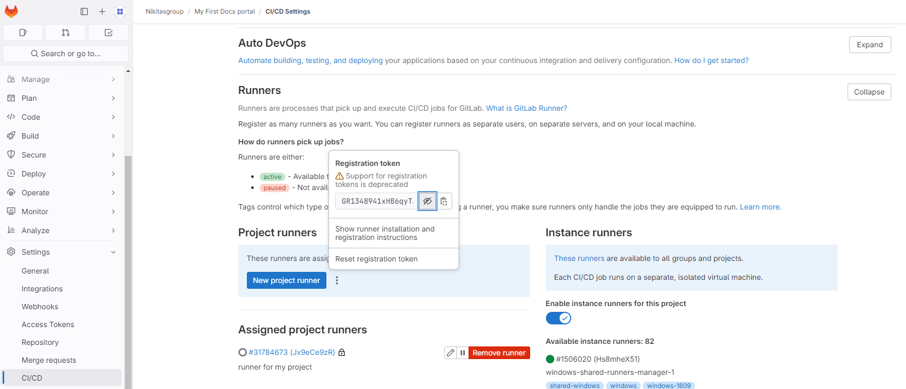
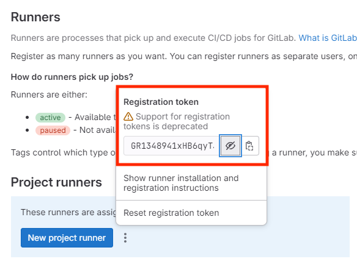
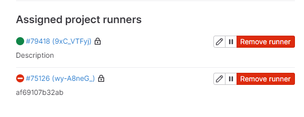

Как запустить свой первый портал
Предварительная подготовка
-
Регистрируемся на GitHub.
-
Создаем свой первый проект. Это можно сделать сразу после регистрации или создать позже.
-
Устанавливаем Git: https://git-scm.com/download/win.
-
Устанавливаем Python, например последнюю версию: https://www.python.org/downloads/release/python-3121/. Пролистайте в самый низ и выберите версию для вашей ОC. Для пользователей MacOS, можно скачать все следующей командой:
brew install python -
Для самых стойких — установить Docker: https://www.docker.com/get-started/. С помощью докера мы будем автоматизировать выкладку обновлений контента.
-
Перезапустите компьютер после установки всех компонент.
-
Проверьте, что Git и Python успешно установились:
git --version git version 2.40.1.windows.1 python --version Python 3.11.1 pip --version pip 22.3.1 from C:\Users\User\AppData\Local\Programs\Python\Python311\Lib\site-packages\pip (python 3.11)
Первые шаги
Мы будем использовать язык разметки Markdown и движок MkDocs для генерации статического контента.
-
Открываем терминал.
-
Устанавливаем MkDocs локально:
pip install mkdocs -
Проверяем, что все установилось:
mkdocs --version mkdocs, version 1.5.3 from C:\Users\User\AppData\Local\Programs\Python\Python311\Lib\site-packages\mkdocs (Python 3.11) -
Создаем свой первый проект в текущей директории:
mkdocs new my-project -
Переходим в директорию с проектом:
cd my-project -
Собираем и запускаем локально портал:
mkdocs serveВ конце, в результате выполнения команды можно получить ссылку по которой доступен результат сборки портала:
INFO - Building documentation... INFO - Cleaning site directory INFO - Documentation built in 0.19 seconds INFO - [16:00:36] Watching paths for changes: 'docs', 'mkdocs.yml' INFO - [16:00:36] Serving on http://127.0.0.1:8000/ -
Копируем http://127.0.0.1:8000/ и вставляем в адресную строку.
Наводим красоту
Практически все визуальные настройки выполняются в рамках файла mkdocs.yml. Изначально он состоит лишь из одной строчки:
site_name: My Docs
Для MkDocs есть множество различных тем, плагинов и расширений. Самая популярная тема для MkDocs c активной поддержкой и постоянным развитием — это MkDocs Material: https://squidfunk.github.io/mkdocs-material/. Сделаем наш портал в такой же теме.
-
Установим тему Material:
pip install mkdocs-material -
Устанавливаем пакет расширений (понадобится нам в будущем):
pip install pymdown-extensions -
Откроем файл mkdocs.yml и подключим тему Material к нашему проекту:
theme: name: material # https://squidfunk.github.io/mkdocs-material/ -
Пересоберем портал:
mkdocs serve -
Нам нужно добавить новый документ на наш портал и при это указать его в навигационном меню. Для этого в файле mkdocs.yml нужно создать новую секцию:
nav: -
Теперь скачайте из Телеграмма файлик
my-first-docs-portal.md. И перенесите его в папку docs в вашем проекте. -
Добавим инструкцию на портал:
nav: - Как запустить первый портал?: my-first-docs-portal.md -
Добавим расширение, которое сделает блоки кода более красивыми:
markdown_extensions: - pymdownx.superfences # более гибкое оформление блоков https://facelessuser.github.io/pymdown-extensions/extensions/superfences/ -
Добавим группирующий раздел и перенесем навигационную панель наверх.
nav: - Как запустить первый портал?: - Вот так: my-first-portal.md - Дом: index.md theme: name: material # основная тема, которую используем, https://squidfunk.github.io/mkdocs-material/ features: - navigation.tabs # перемещает навигационное меню наверх -
Заменим логотип и favicon на нашем портале:
theme: name: material # https://squidfunk.github.io/mkdocs-material/ logo: TWD_logo.png favicon: TWD_favicon.png -
Поменяем цвета портала на корпоративные. Для этого нужно внутри папки docs нужно создать файл material-styles.css и указать путь до него в mkdocs.yml:
extra_css: - material-styles.cssА внутри файла material-styles.css укажем стили для шапки нашего портала:
.md-header { --md-primary-fg-color: #FFFFFF; --md-primary-bg-color: #000000; } -
Добавим поисковую строку на портал:
plugins: - search: lang: - ru
Итоговый mkdocs.yml:
site_name: Tech Writer Days
nav:
- Как запустить первый портал?:
- Вот так: my-first-portal.md
- Дом: index.md
theme:
name: material
logo: TWD_logo.png
favicon: TWD_favicon.png
features:
- navigation.tabs
extra_css:
- material-styles.css
markdown_extensions:
- pymdownx.superfences
plugins:
- search:
lang:
- ru
Рекомендуемые инструменты:
-
Плагин для работы с видео на портале:
plugins: - mkdocs-video: is_video: True #изменение тега для видео на конечной странице html (было <iframe>, стало <video>, когда true) video_type: mpeg #- если формат видео не mp4 (по умолчанию), а другой. Этот параметр будет работать только с <video> тегом ( is_video: True) video_autoplay: True # автовоспроизведение видео. Этот параметр будет работать только с <video> тегом ( is_video: True) video_loop: False # зацикливание видео. Этот параметр будет работать только с <video> тегом ( is_video: True) video_muted: True # должно ли видео быть на мьюте. Этот параметр будет работать только с <video> тегом ( is_video: True) video_controls: True # отображение элементов управления видео. Этот параметр будет работать только с <video> тегом ( is_video: True) css_style: width: "100%" #изменение ширины видео по дефолту -
Расширение, которое делает красивые примечание:
markdown_extensions: - admonition # https://squidfunk.github.io/mkdocs-material/setup/extensions/python-markdown/#admonition!!!warning "Внимание" Вот например красивое внимание :)
-
Расширение, которое позволяет переиспользовать одинаковые части документации:
markdown_extensions: - pymdownx.snippets # Расширение Snippets добавляет возможность встраивать в документ содержимое из произвольных файлов, включая другие документы или исходные файлы!!!note "Примечание" Нам в последнее время стало более актуально использовать шаблонизатор Jinja, который работает в рамках плагина mkdocs-macros-plugin.
-
Очень полезным может быть плагин делающий редиректы: mkdocs-redirects.
plugins: - redirects: redirect_maps: 'Support/new.md': 'LegalInformation/general_info.md'
Начинаем работать с Git
Чтобы сохранять, версионировать и запускать портал нам понадобится GitLab/GitHub. Сначала нам нужно склонировать репозиторий, который мы создавали на шаге Предварительная подготовка.
-
Склонируем репозиторий в любое удобное место, но не в папку с нашим порталом.
PS C:\Users\User\Desktop> git clone https://github.com/Recours/recours.github.io.git -
В моем случае, я клонировал на рабочий стол и у меня появилась папка с названием репозитория. Теперь нужно перенести все содержимое папки my-project внутрь новой папки.
-
Перейдем внутрь папки репозитория.
cd recours.github.io -
Собираем наш первый коммит:
git add . --all git commit -m "Наш первый портал"Итог:
[main 88fd875] Наш первый портал 5 files changed, 206 insertions(+) create mode 100644 docs/VK_WorkSpace_logo.svg create mode 100644 docs/index.md create mode 100644 docs/material-styles.css create mode 100644 docs/my-first-docs-portal.md create mode 100644 mkdocs.yml -
Отправим изменения в репозиторий на сервер GitHub'а:
git push -uf origin mainгде
mainэто название ветки.Итог:
Перечисление объектов: 12, готово. Подсчет объектов: 100% (12/12), готово. При сжатии изменений используется до 8 потоков Сжатие объектов: 100% (10/10), готово. Запись объектов: 100% (10/10), 11.02 КиБ | 11.02 МиБ/с, готово. Всего 10 (изменений 0), повторно использовано 0 (изменений 0), повторно использовано пакетов 0 To https://github.com/Recours/DocsPortal.git e7a1c28..c9db308 main -> main branch 'main' set up to track 'origin/main'.
Если вы как и я не фанаты работать с консолью, то рекомендую воспользоваться клиентами с полноценным UI для работы с Git:
Публикуем контент в GitHub Pages
Нам нужно назвать свой репозиторий в следующем виде: {GitHub-nickname}.github.io. Например: recours.github.io. Переименовать репозиторий можно в разделе Settings проекта. Это требование GitHub'а, иначе публикации не будет.
-
В корневой папке нашего проекта создайте папку .github.
-
В папке .github создайте папку workflows.
-
В папке workflows создайте файл
mkdocs.yml. -
Вставьте следующий код в этот файл:
name: mkdocs on: push: branches: - main jobs: deploy: runs-on: ubuntu-latest steps: - uses: actions/checkout@v2 - uses: actions/setup-python@v2 with: python-version: 3.x - run: pip install mkdocs-material - run: mkdocs gh-deploy --force-Что есть в этом скрипте:
name: mkdocs:— это имя рабочего процесса.on:— определяет условия, при которых запускается данный рабочий процесс. В данном случае, рабочий процесс запускается при каждом пуше в ветку "main".jobs:— определяет список задач, которые должны быть выполнены в рамках этого рабочего процесса.deploy— название задачи, в рамках которой мы будем деплоить портал.- uses: actions/checkout@v2— клонирует репозиторий в рабочее пространство, где будет выполняться генерация статического контента и сборка портала.
-
Запушьте изменения в удаленный репозиторий:
git add . --all git commit -m "Автоматическая публикация контента" git push -uf origin main
Публикуем контент в GitLab Pages
Все очень похоже при публикации в GitLab Pages:
-
В корне проекта нужно создать файл
.gitlab-ci.yml. -
Вставить следующий код в файл с попракой на название веток в вашем репозитории:
# Используем легковесный образ чтобы минимизировать задержки на скачивание и установке образа
image: python:3-alpine
.run_only_on_master:
&run_only_on_master
rules:
- if: '$CI_COMMIT_BRANCH == "main"'
build_static_site:
stage: build
image: python:3-alpine
before_script:
- pip install "Cython<3.0" pyyaml --user --no-build-isolation # гитхабные тикеты про багу https://github.com/yaml/pyyaml/issues/601 и https://github.com/yaml/pyyaml/pull/702
- pip install mkdocs
- pip install mkdocs-material
- pip install pymdown-extensions
script:
- mkdocs build -d public
artifacts:
expire_in: 15 mins
paths:
- public
# специальная джоба для выкладки в gitlab pages (для ее выполнения обязательна выполненная джоба build_static_site)
pages:
<<: *run_only_on_master
stage: deploy
needs:
- build_static_site
script: # это костыль для обхода известной баги гитлаба - нельзя джобу без скрипта. Поэтому тут просто зовем команду-заглушку, которая ничего не делает
- "true"
artifacts:
expire_in: 15 mins
paths:
- public
Как подключить локальный раннер к репозиторию в GitLab
Раннер нужен для выполнения задач описанных в GitHub Actions и GitLab CI. В GitHub нет необходимости подключать свои раннеры, потому что все на себя берут публичные раннеры. В GitLab время этих раннеров сильно ограничено, либо их может не быть совсем, если это GitLab в вашей инфраструктуре. При этом у вас нет публичных раннеров на компанию.
-
Нужно обязательно установить Docker — это самый простой способ поддерживать локальный раннер.
-
Все команды выполняются в командной строке. Сначала создадим пустую конфигурацию для нашего раннера.
docker volume create gitlab-runner-config -
Запустим контейнер с нашим раннером с помощью следующей команды:
docker run -d --name gitlab-runner --restart always -v /var/run/docker.sock:/var/run/docker.sock -v gitlab-runner-config:/etc/gitlab-runner gitlab/gitlab-runner:alpine-v15.9.1 -
В репозитории проекта в GitLab перейдите в раздел Settings → CI/CD и разверните раздел Runners. Нам понадобится эта страница для настройки раннера: 
-
Перейдите в Docker, в раздел Containers.
-
Найдите там контейнер gitlab-runner, кликните по нему и внутри перейдите на вкладку Exec.
-
Введите команду:
gitlab-runner register -
Введите ваш GitLab instance, например: https://gitlab.com/
-
Введите registration token из шага 3. 
-
Опционально оставляем описание и теги. Можно просто прокликать Enter.
-
Как executor пропишите:
docker -
Пропишите образ докера по умолчанию:
ruby 2.7. -
Обновите страницу в GitLab'e и проверьте, что раннер появился: 